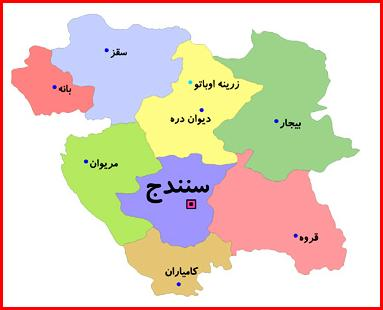

استان کردستان به منطقهای تعریفشده به صورت تقریبی از نظر جغرافیایی و فرهنگی گفته میشود که بیشتر ساکنین آن کردهستند و فرهنگ، زبان و ملیت کردی در آن به صورت تاریخی بنا شدهاست. کردستان منطقهای را از شمال غربی زاگرس تا شرق توروس را دربردارد. این منطقه حدوداً ۵۰۰،۰۰۰ کیلومتر مربع مساحت دارد. واژه کرد همان کورد است که در طول تاریخ از«u» به «ο» تغییر یافت. همچنین واژه کورد نیز از اصل این کلمه، کلمه کورت گرفته شده. بنابراین اصل این واژه، کورت است.
در عکس زیر شهرهای این استان به تفکیک مشخص شده اند.
